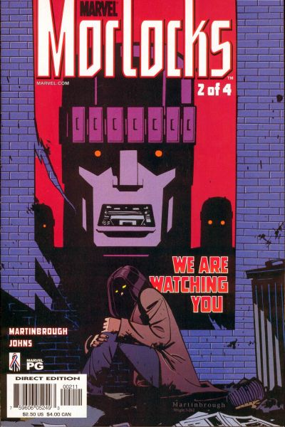
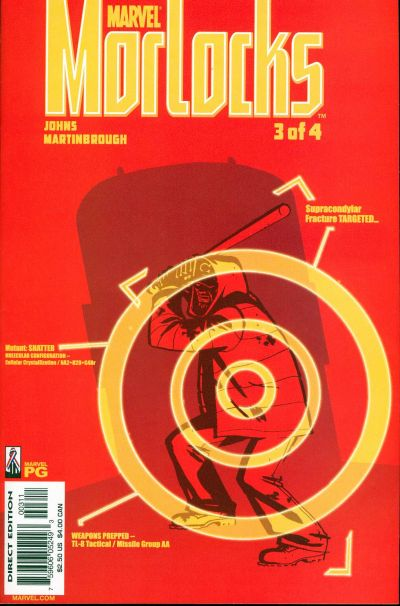
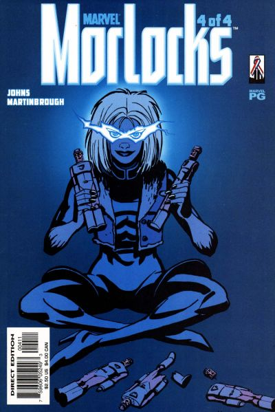

They are everywhere... but they belong nowhere. There is an urban legend circulating throughout America. One that began in New York many years ago. A tale of mutants so deviant and abhorrent, so freakish, that "normal" mutants call them outsiders. The creatures live below the streets of our cities, under the asphalt roads and electrical pipes, safe from Sentinel detection. These unfortunates are known as "the Morlocks."
#1 This is the tale of one of those groups -- a group whose members each hope to accomplish one last "wish" in the surface world before severing all ties with our society. Some of these men and women want to say good-bye to loved ones, others are looking for revenge. As paranoia grows and fear ignites, a city neighborhood in Chicago reveals what lengths "ordinary" people will go to eradicate these monsters. They are not heroes or villains. They are scared, cold and hungry... trying to stay out of the spotlight. The Morlocks want to exist. Nothing more. But humanity won't let them. And probably shouldn't.

#2 Throughout the United States, desperate and fearful mutants have banded together in small groups, living under the streets of our largest cities where they remain hidden from detection. They do not want to be heroes or villains... they only want to survive. More than just an urban legend, less than the horrific monsters America proclaims them to be. They've left behind their homes... their jobs... their loved ones. But for the Morlocks, there are still scores to settle! And even as the outcasts say last goodbyes, their fragile alliance begins to fray -- and anti-mutant paranoia leads to the dispatching of Sentinels to Chicago!

#3 Continuing a look into the ubran myth that is spreading across America: where lurk the Morlocks? The pact the underground mutants made begins to fall apart when one of them goes too far against humanity. As the Chicago Police invade their home, one of the Morlocks reveals their ultimate sin while another finds salvation in the most unlikely of places!

#4 Postman. Electric Eve. Angel Dust. Shatter. Cell. Trader. Litterbug. Not so long ago, they were like anyone else -- like you and me. They had homes, families, hopes and dreams. Now, they have no choice but to go underground, where they can live in peace. But before they do that, this group of extraordinaryily-powered -- but still fragile -- people must face a squadron of Sentinels -- and the final goodbye to the lives they're leaving behind!